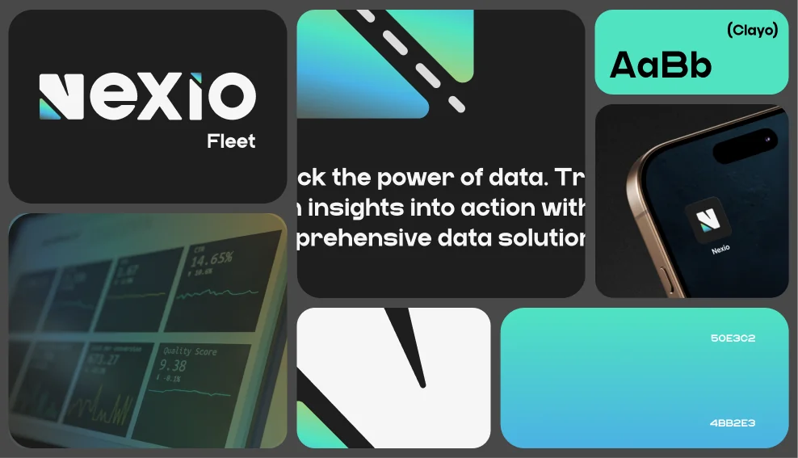
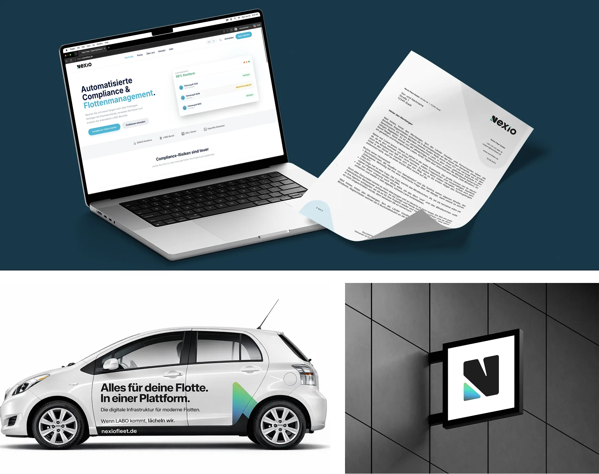
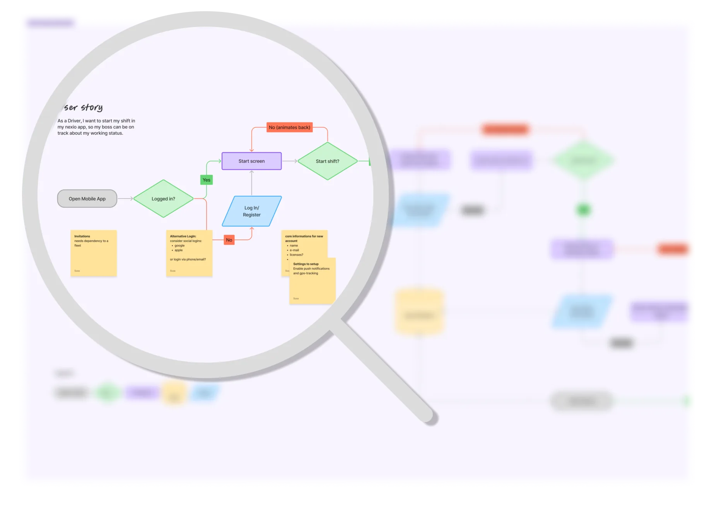
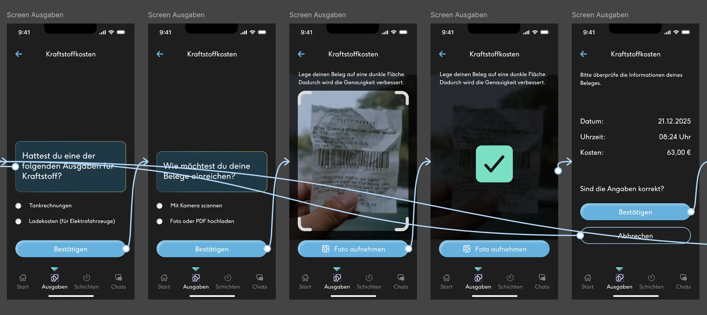
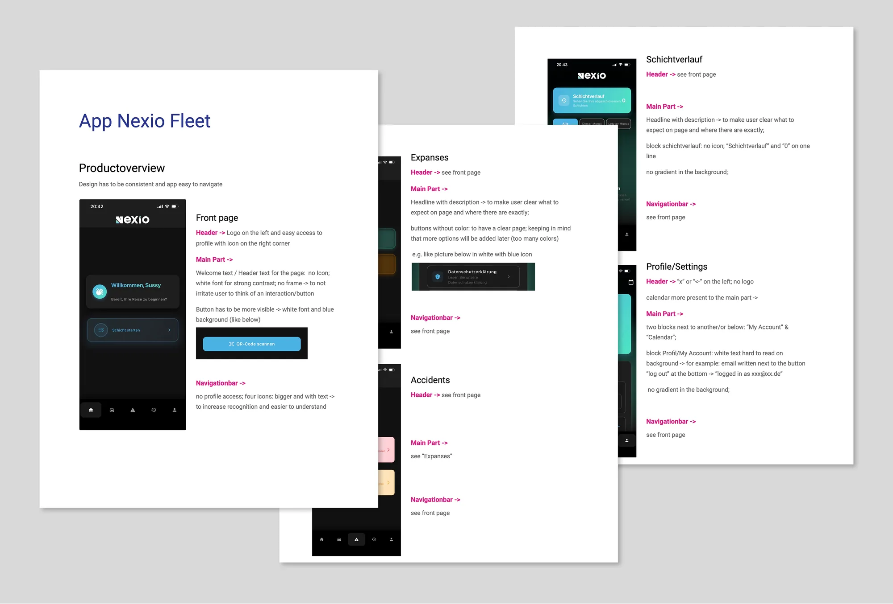
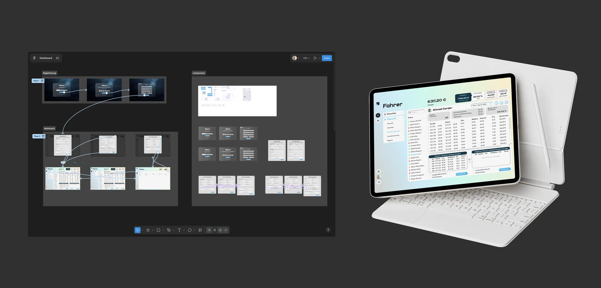
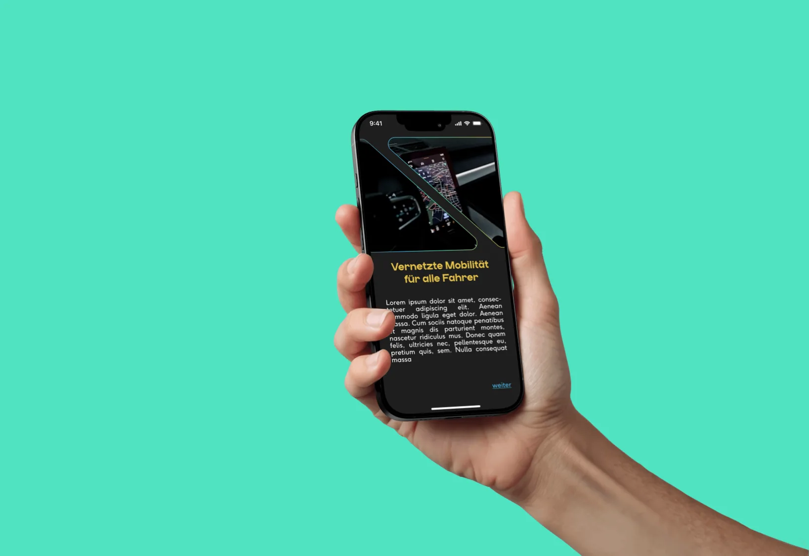

Nexio Fleet: Von der Markenidentität zum digitalen Produkterlebnis Nexio Fleet: From Brand Identity to Digital Product Experience
Aufbau einer stimmigen Marke und Gestaltung des mobilen Erlebnisses für ein Fleet-Management-Startup – von frühen Produktkonzepten und interaktiven Prototypen bis zur UX/UI-Verfeinerung der veröffentlichten App.
Building a cohesive brand and shaping the mobile experience for a fleet management startup — from early product concepts and interactive prototypes to UX/UI refinement of the launched application.
- RolleRole
- Freelance UX/UI & Brand DesignerinFreelance UX/UI & Brand Designer
- BrancheIndustry
- Mobilität / Fleet ManagementMobility / Fleet Management
- UmfangScope
- Markenidentität · Product Discovery · UX/UI-Design · Prototyping · UX-EvaluationBrand Identity · Product Discovery · UX/UI Design · Prototyping · UX Evaluation
- Tools
- Figma · FigJam · Adobe Creative Cloud
Der KontextThe context
Ein vernetztes Mobilitätserlebnis aufbauenBuilding a connected mobility experience
Nexio ist ein Mobilitäts-Startup, das digitale Lösungen für das Fuhrparkmanagement entwickelt. Sein Produkt-Ökosystem verbindet eine mobile App für Fahrer mit einer webbasierten Plattform für Fuhrparkbetreiber.
Nexio is a mobility startup developing digital solutions for fleet management. Its product ecosystem connects a mobile application for drivers with a web-based platform for fleet operators.
Ich kam in einer frühen Phase zum Startup und habe dazu beigetragen, die visuelle Identität aufzubauen und die Produktvision in greifbare digitale Erlebnisse zu übersetzen.
Joining the startup at an early stage, I contributed to establishing its visual identity and translating the product vision into tangible digital experiences.
Die Herausforderung bestand darin, eine konsistente Marke zu schaffen und zugleich intuitive Interfaces für Nutzer zu gestalten, die das Produkt in ganz unterschiedlichen Situationen verwenden – von Fahrern, die ihren Arbeitsalltag organisieren, bis zu Fuhrparkbetreibern, die ihren Betrieb im Blick behalten.
The challenge was to create a consistent brand while shaping intuitive interfaces for users who interact with the product in different contexts — from drivers managing their daily activities to fleet operators overseeing their operations.
Fahrer-AppDriver App
Mobiles Erlebnis, das Fahrer in ihrem Arbeitsalltag unterstützt.
Mobile experience supporting drivers in their day-to-day activities.
Flotten-PlattformFleet Platform
Webbasiertes Erlebnis für Fuhrparkmanagement und Verwaltung.
Web-based experience for fleet management and administration.
Inhaltcontent
MarkenfundamentBrand foundation
Eine unverwechselbare visuelle Identität gestaltenCreating a distinctive visual identity
Ich habe die visuelle Identität von Nexio von Grund auf entwickelt, um einen wiedererkennbaren und konsistenten Markenauftritt zu schaffen.
Starting from the ground up, I developed Nexio’s visual identity to establish a recognizable and consistent brand presence.
Dazu gehörten Logo, Farbpalette, Typografie, Bildsprache und grafische Elemente. Das visuelle System war so angelegt, dass es an verschiedenen Touchpoints funktioniert – als Grundlage für das digitale Produkt ebenso wie für die Unternehmenskommunikation.
This included the logo, color palette, typography, imagery and graphic elements. The visual system was designed to work across different touchpoints, providing a foundation for the digital product as well as corporate communication.
Die entstandene Identität verbindet eine dunkle visuelle Umgebung mit leuchtenden Verläufen und markanten geometrischen Elementen und verleiht der Marke einen zeitgemäßen, technologiegetriebenen Auftritt.
The resulting identity combines a dark visual environment with vibrant gradients and distinctive geometric elements, giving the brand a contemporary, technology-driven appearance.


Product Discovery
Produktanforderungen in User Journeys übersetzenTranslating product requirements into user journeys
In enger Zusammenarbeit mit dem Startup-Team habe ich mit Research, gemeinsamen Workshops und der Ausarbeitung funktionaler Anforderungen zur Product Discovery beigetragen.
Working closely with the startup team, I contributed to product discovery through research, collaborative workshops and the exploration of functional requirements.
Gemeinsam haben wir Produktideen in strukturierte User Journeys übersetzt und die Interaktionen und Entscheidungen identifiziert, mit denen sich Fahrer in ihrem Arbeitsalltag unterstützen lassen.
Together, we translated product ideas into structured user journeys, identifying the interactions and decisions needed to support drivers throughout their daily activities.
User Flows halfen uns, zentrale Abläufe zu visualisieren, alternative Wege zu berücksichtigen und eine Grundlage für den interaktiven App-Prototyp zu schaffen.
User flows helped us visualize key processes, consider alternative paths and establish a foundation for the interactive app prototype.

UX/UI-DesignUX/UI design
Das zentrale mobile Erlebnis gestaltenDesigning the core mobile experience
Auf Basis der definierten User Journeys habe ich einen interaktiven Figma-Prototyp erstellt, der sich auf die wichtigsten Funktionen und Interaktionen für Fahrer konzentriert.
Based on the defined user journeys, I created an interactive Figma prototype focusing on the main driver-facing features and interactions.
Der Prototyp übersetzte funktionale Anforderungen in greifbare Interfaces und verband zentrale Screens zu navigierbaren Flows – als frühe Designgrundlage für die Entwicklung.
The prototype translated functional requirements into tangible interfaces and connected key screens into navigable flows, providing an early design foundation for development.
Ich habe die visuelle Identität von Nexio auf das mobile Erlebnis übertragen und einen einheitlichen Umgang mit Layout, Typografie, Farbe und interaktiven Elementen etabliert.
I applied Nexio’s visual identity to the mobile experience, establishing a consistent approach to layout, typography, color and interactive elements.

UX-Qualität & IterationUX quality & iteration
Die Lücke zwischen Design und Umsetzung schließenBridging the gap between design and implementation
Während der Entwicklung wich die umgesetzte App in Teilen vom ursprünglichen Figma-Prototyp ab. Änderungen an Layouts, Farben und Inhalten führten zu Inkonsistenzen im Produkterlebnis.
As the application evolved during development, parts of the implemented interface diverged from the original Figma prototype. Changes to layouts, colors and content introduced inconsistencies across the product experience.
Um diese Probleme anzugehen, habe ich eigenständig ein strukturiertes UX/UI-Review der umgesetzten App durchgeführt und Navigation, visuelle Hierarchie, Klarheit der Interaktionen und Gesamtkonsistenz bewertet.
To address these issues, I independently conducted a structured UX/UI review of the implemented app, evaluating its navigation, visual hierarchy, interaction clarity and overall consistency.
Das Review mündete in konkrete Designempfehlungen, die größtenteils in die folgenden Produktiterationen eingeflossen sind.
The review resulted in actionable design recommendations, which were largely incorporated into subsequent product iterations.
Vom Prototyp zur VerfeinerungFrom prototype to refinement
- Ursprünglicher Figma-PrototypOriginal Figma prototype
- Umgesetzte AppImplemented application
- UX/UI-ReviewUX/UI review
- ProduktverfeinerungProduct refinement
Highlights aus dem UX-Review
UX review highlights
01 · Navigation & Orientierung01 · Navigation & orientation
Orientierung und Wiedererkennung verbessernImproving orientation and recognition
Beobachtung:Observation: Kleinere Navigations-Icons und fehlende Beschriftungen erschwerten es, die einzelnen Ziele zu erkennen.Smaller navigation icons and missing labels made it harder to recognize individual destinations.
Empfehlung:Recommendation: Icons vergrößern, beschreibende Beschriftungen ergänzen und den Zugang zum Nutzerprofil vereinfachen.Increase icon size, introduce descriptive labels and simplify access to the user profile.
02 · Visuelle Hierarchie02 · Visual hierarchy
Interaktionen besser unterscheidbar machenMaking interactions more distinguishable
Beobachtung:Observation: Uneinheitliche Gewichtung und konkurrierende visuelle Stile machten informative und interaktive Elemente schwer unterscheidbar.Inconsistent emphasis and competing visual styles reduced clarity between informational and interactive elements.
Empfehlung:Recommendation: Ein klareres CTA-Styling und eine konsistentere visuelle Hierarchie etablieren.Establish clearer CTA styling and a more consistent visual hierarchy.
03 · Interface-Konsistenz03 · Interface consistency
Ein stimmigeres Erlebnis schaffenCreating a more coherent experience
Beobachtung:Observation: Unterschiedliche Layouts, Farben und Interface-Gestaltungen führten zu Inkonsistenzen zwischen den Screens.Different layouts, colors and interface treatments created inconsistencies across screens.
Empfehlung:Recommendation: Wiederkehrende Muster vereinheitlichen, die Lesbarkeit verbessern und eine konsistente visuelle Sprache anwenden.Standardize recurring patterns, improve readability and apply a consistent visual language.

Über die mobile App hinausBeyond the mobile app
Ein vernetztes Produkt-Ökosystem unterstützenSupporting a connected product ecosystem
Über die mobile App hinaus habe ich an frühen Dashboard-Explorationen mitgewirkt und die Unternehmenswebsite geprüft, um ein konsistenteres Produkt- und Markenerlebnis zu unterstützen.
Beyond the mobile application, I contributed to early dashboard explorations and reviewed the corporate website to support a more consistent product and brand experience.
Meine Mitarbeit am Dashboard konzentrierte sich auf erste Interface-Konzepte und Explorationen, die in die weitere Entwicklung einflossen.
My dashboard involvement focused on initial interface concepts and explorations that informed further development.
Für die Unternehmenswebsite habe ich UX/UI-Feedback zu visueller Hierarchie, Klarheit der Inhalte, Konsistenz der CTAs und der Gesamtdarstellung des Produkts gegeben.
For the corporate website, I provided UX/UI feedback addressing visual hierarchy, content clarity, CTA consistency and the overall presentation of the product.

ErgebnisOutcome
Vom Konzept zum veröffentlichten ProduktFrom concept to a launched product
Meine Arbeit hat die visuelle Identität von Nexio etabliert und eine Designgrundlage für das digitale Produkterlebnis geschaffen.
My work helped establish Nexio’s visual identity and provided a design foundation for its digital product experience.
Mit gemeinsamer Product Discovery, strukturierten User Flows und interaktivem Prototyping habe ich dazu beigetragen, die App für Fahrer vor der Entwicklung zu gestalten.
Through collaborative product discovery, structured user flows and interactive prototyping, I contributed to shaping the driver-facing application before development.
Als sich das Produkt weiterentwickelte, half mein UX/UI-Review, Inkonsistenzen im umgesetzten Interface zu erkennen und zu beheben – der Großteil meiner Empfehlungen floss in die folgenden Iterationen ein.
As the product evolved, my UX/UI review helped identify and address inconsistencies in the implemented interface, with the majority of my recommendations incorporated into subsequent iterations.
Das Projekt gab mir die Möglichkeit, in einem echten Startup-Umfeld an Markenentwicklung, Produktdesign und UX-Qualität mitzuwirken.
The project gave me the opportunity to contribute across brand development, product design and UX quality within a real startup environment.

Die Markenidentität etabliertEstablished the brand identity
Eine visuelle Grundlage für Nexio über digitale und Unternehmens-Touchpoints hinweg entwickelt.
Developed a visual foundation for Nexio across digital and corporate touchpoints.
Anforderungen in Produktkonzepte übersetztTranslated requirements into product concepts
An User Flows mitgearbeitet und einen interaktiven Prototyp für zentrale Fahrer-Journeys erstellt.
Collaborated on user flows and created an interactive prototype for core driver journeys.
Iterative Produktverbesserungen unterstütztSupported iterative product improvements
Ein eigenständiges UX/UI-Review durchgeführt, dessen Empfehlungen größtenteils in der weiterentwickelten App umgesetzt wurden.
Conducted an independent UX/UI review, with recommendations largely implemented in the evolving application.